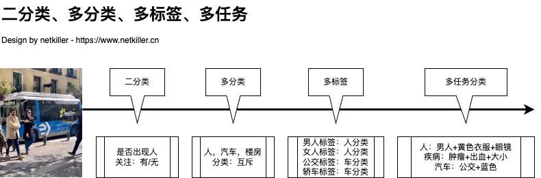

| 知乎专栏 |
|  |
人工智能深度学习中的二分类问题是一种基本的分类任务。它是指将输入的数据样本划分为两个互斥的类别。例如，在判断一封邮件是垃圾邮件还是正常邮件时，只有这两种类别选项，这就是一个典型的二分类问题。再比如，医学影像中判断一个肿瘤是良性还是恶性，也是二分类问题。
多分类（Multi - classification）是机器学习和数据挖掘领域中的一种分类任务类型。多分类问题是在二分类问题的基础上扩展而来的，与二分类（Binary - classification）将数据分为两个类别不同，多分类是指将输入的数据样本划分到多于两个互斥的类别中。例如，在手写数字识别任务中，要把输入的手写数字图像分类到 0 - 9 这 10 个类别中；在自然语言处理的文本情感分类中，可能将文本情感分为 “非常喜欢”“喜欢”“中立”“不喜欢”“非常不喜欢” 等多个类别。
在深度学习中，常用的多分类算法包括K近邻(KNN)、决策树、朴素贝叶斯等，我们通常使用一种称为“softmax”的激活函数来实现多分类。softmax函数可以将神经网络的输出映射到[0,1]的范围内，并保证所有输出之和为1，从而得到每个类别的概率分布。
人工智能多标签技术是一种机器学习技术，它主要用于处理一个样本可能同时属于多个不同类别标签的情况。与传统的单标签分类不同，单标签分类任务中每个样本只能被分配到一个类别，而多标签分类允许一个样本有多个相关的类别标签。例如，在图像分类中，一张照片可能同时包含 “山脉”“河流”“森林” 等多个元素，那么这张照片就可以用多标签技术标记为这三个类别。
多分类 与 多标签 的区别
多分类（Multi - Classification）是指将一个样本划分到多个互斥的类别中的一个。例如，在图像识别中，一张图片可能被分类为猫、狗或者兔子，这三种类别是相互独立且排他的，一个样本只能属于其中的一个类别。
多标签（Multi - Label）是指一个样本可以同时属于多个类别。以文本分类为例，一篇新闻文章可能同时涉及体育、政治和经济这几个不同的主题标签，每个标签代表一种可能的类别，并且一个样本可以同时具有多个标签。或者商品分类，一个商品可能同时属于多个品类，如一件衣服可能既是 “男装” 又是 “冬装”。